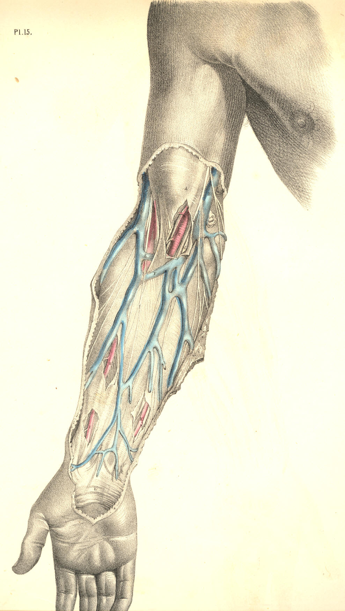
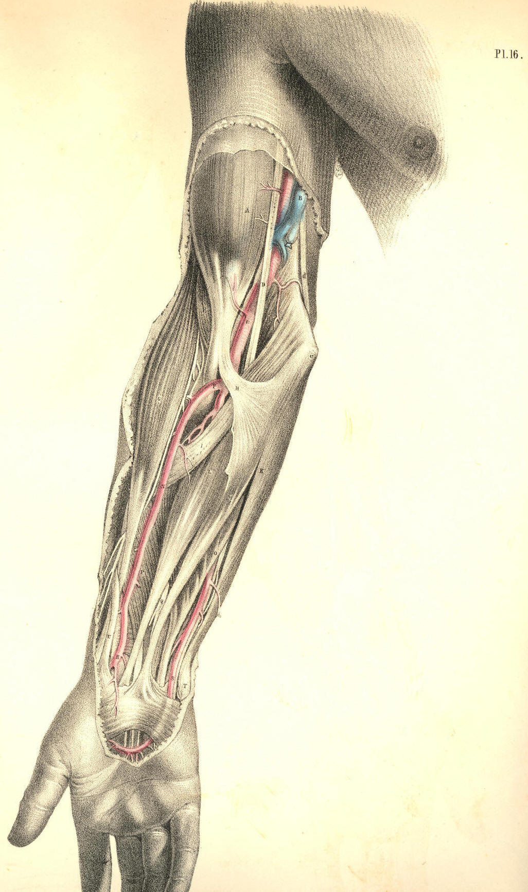

SURGICAL ANATOMY by JOSEPH MACLISE
COMMENTARY ON PLATES 15 & 16.
THE SURGICAL DISSECTION OF THE BEND OF THE ELBOW
AND THE FOREARM, SHOWING THE RELATIVE POSITION
OF THE ARTERIES, VEINS, NERVES, &c.
The farther the surgical region happens to be removed from the centre of
the body, the less likely is it that all accidents or operations which
involve such regions will concern the life immediately. The limbs
undergo all kinds of mutilation, both by accident and intention, and yet
the patient survives; but when the like happens at any region of the
trunk of the body, the life will be directly and seriously threatened.
It seems, therefore, that in the same degree as the living principle
diverges from the body's centre into the outstanding members, in that
degree is the life weakened in intensity; and just as, according to
physical laws, the ray of light becomes less and less intense by the
square of the distance from the central source, so the vital ray, or
vis, loses momentum in the same ratio as it diverges from the common
central line to the periphery.
The relative anatomy of every surgical region becomes a study of more or
less interest to the surgeon, according to the degree of importance
attaching to the organs contained, or according to the frequency of such
accidents as are liable to occur in each. The bend of the elbow is a
region of anatomical importance, owing to the fact of its giving passage
to C, Plate 15, the main artery of the limb, and also because in it are
located the veins D, B, E, F, which are frequently the subject of
operation. The anatomy of this region becomes, therefore, important;
forasmuch as the operation which is intended to concern the veins alone,
may also, by accident, include the main arterial vessel which they
overlie. The nerves, which are seen to accompany the veins
superficially, as well as that which accompanies the more
deeply-situated artery, are, for the same reason, required to be known.
The course of the brachial artery along the inner border of the biceps
muscle is comparatively superficial, from the point where it leaves the
axilla to the bend of the elbow. In the whole of this course it is
covered by the fascia of the arm, which serves to isolate it from the
superficial basilic vein, B, and the internal cutaneous nerve, both of
which nevertheless overlie the artery. The median nerve, d, Plate 15,
accompanies the artery in its proper sheath, which is a duplication of
the common fascia; and in this sheath are also situated the venae
comites, making frequent loops around the artery. The median nerve
itself, D, Plate 16, takes a direct course down the arm; and the
different relative positions which this nerve holds in reference to the
artery, C, at the upper end, the middle, and the lower end of the arm,
occur mainly in consequence of the undulating character of the vessel
itself.
When it is required to ligature the artery in the middle of the arm, the
median nerve will be found, in general, at its outer side, between it
and the biceps; but as the course of the artery is from the inner side
of the biceps to the middle of the bend of the elbow, so we find it
passing under the nerve to gain this locality, C, Plate 16, where the
median nerve, D, then becomes situated at the inner side of the vessel.
The median nerve, thus found to be differently situated in reference to
the brachial artery, at the upper, the middle, and the lower part of the
arm, is (with these facts always held in memory) taken as the guide to
that vessel. An incision made of sufficient length (an inch and a half,
more or less) over the course of the artery, and to the outer side of
the basilic vein, B, Plate 16, will divide the skin, subcutaneous
adipose membrane, which varies much in thickness in several individuals,
and will next expose the common fascial envelope of the arm. When this
fascia is opened, by dividing it on the director, the artery becomes
exposed; the median nerve is then to be separated from the side of the
vessel by the probe or director, and, with the precaution of not
including the venal comites, the ligature may now be passed around the
vessel. In the lower third of the arm it is not likely that the operator
will encounter the ulnar nerve, and mistake it for the median, since the
former, d, Plate 16, is
considerably removed from the vessel. If the
incision be made precisely in the usual course of the brachial artery,
the ulnar nerve will not show itself. It will be well, however, to bear
in mind the possible occurrence of some of those anomalies to that
normal relative position of the artery, the median, and the ulnar nerve,
which the accompanying Plates represent.
The median nerve, D, Plate 16, is sometimes found to lie beneath the
artery in the middle and lower third of the arm. At other times it is
found far removed to the inner side of the usual position of the vessel,
and lying in close contact with the ulnar nerve, d. Or the brachial
artery may take this latter position, while the median nerve stands
alone at the position of D, Plate 16. Or both the main artery and the
median nerve may course much to the inner side of the biceps muscle, A,
Plate 16, while in the usual situation of the nerve and vessel there is
only to be found a small arterial branch (the radial), which springs
from the brachial, high up in the arm. Or the nerve and vessel may be
lying concealed beneath a slip of the brachialis anticus muscle, E,
Plate 16, in which case no appearance of them will be at all manifested
through the usual place of incision made for the ligature of the
brachial vessel. Or, lastly, there may be found more arteries than the
single main brachial appearing at this place in the arm, and such
condition of a plurality of vessels occurs in consequence of a high
division of the brachial artery. Each of these variations from the
normal type is more or less frequent; and though it certainly is of
practical import to bear them in mind, still, as we never can foretell
their occurrence by a superficial examination of the limb, or pronounce
them to be present till we actually encounter them in operation, it is
only when we find them that we commence to reason upon the facts; but
even at this crisis the knowledge of their anatomy may prevent a
confusion of ideas.
That generalization of the facts of such anomalies as are liable to
occur to the normal character of the brachial artery, represented in
Plates 15 and 16, which appears to me as being most inclusive of all
their various conditions, is this--viz., that the point of division into
radial, ulnar, and interosseous, which F, Plate 16, usually marks, may
take place at any part of the member between the bend of the elbow and
the coracoid process in the axillary space.
At the bend of the elbow, the brachial artery usually occupies the
middle point between e, the
inner condyle of the humerus and the
external margin of the supinator radii longus muscle, G. The structures
which overlie the arterial vessel, C, Plate 16, at this locality,
numbering them from its own depth to the cutaneous surface, are these--
viz., some adipose cellular membrane envelopes the vessel, as it lies on
E, the brachialis anticus muscle, and between the two accompanying
veins; at the inner side of the artery, but separated from it by a small
interval occupied by one of the veins, is situated the median nerve d,
Plate 15. Above all three structures is stretched that dense fibrous
band of the fascia, H, Plate 16, which becomes incorporated with the
common fascial covering of the forearm. Over this fascial process lies
the median basilic vein, F B, Plate 15, accompanying which are seen some
branches of the internal cutaneous nerve. The subcutaneous adipose
tissue and common integument cover these latter. If it be required to
ligature the artery at this locality, an incision two inches and a half
in length, made along the course of the vessel, and avoiding the
superficial veins, will expose the fascia; and this being next divided
on the director, the artery will be exposed resting on the brachialis
anticus, and between the biceps tendon and pronator teres muscle. As
this latter muscle differs in width in several individuals, sometimes
lying in close contact with the artery, and at other times leaving a
considerable interval between the vessel and itself, its outer margin is
not, therefore, to be taken as a sure guide to the artery. The inner
border of the biceps indicates much more generally the situation of the
vessel.
The bend of the elbow being that locality where the operation of
phlebotomy is generally performed, it is therefore required to take
exact account of the structures which occupy this region, and more
especially the relation which the superficial veins hold to the deeper
seated artery. In Plate 15, the artery, C, is shown in its situation
beneath the fascial aponeurosis, which comes off from the tendon of the
biceps, a portion of which has been cut away; and the venous vessel, F
B, which usually occupies the track of the artery, is pushed a little to
the inner side. While opening any part of the vessel, F B, which
overlies the artery, it is necessary to proceed with caution, as well
because of the fact that between the artery, C, and the vein, F B, the
fascia alone intervenes, as also because the ulnar artery is given off
rather frequently from the main vessel at this situation, and passes
superficial to the fascia and flexors of the forearm, to gain its usual
position at K, Plate 15. I have met with a well marked example of this
occurrence in the living subject.
The cephalic vein, D, is accompanied by the external cutaneous nerve,
which branches over the fascia on the outer border of the forearm. The
basilic vein, B, is accompanied by the internal cutaneous nerve, which
branches in a similar way over the fascia of the inner and fore part of
the forearm. The numerous branches of both these nerves interlace with
the superficial veins, and are liable to be cut when these veins are
being punctured. Though the median basilic, F, and the basilic vein, B,
are those generally chosen in the performance of the operation of
bleeding, it will be seen, in Plate 15, that their contiguity to the
artery necessarily demands more care and precision in that operation
executed upon them, than if D, the cephalic vein, far removed as it is
from the course of the artery, were the seat of phlebotomy.
As it is required, in order to distend the superficial veins, D, B, F,
that a band should be passed around the limb at some locality between
them and the heart, so that they may yield a free flow of blood on
puncture, a moderate pressure will be all that is needful for that end.
It is a fact worthy of notice, that the excessive pressure of the
ligaturing band around the limb at A B, Plate 15, will produce the same
effect upon the veins near F, as if the pressure were defective, for in
the former case the ligature will obstruct the flow of blood through the
artery; and the vein, F, will hence be undistended by the recurrent
blood, just as when, in the latter case, the ligature, making too feeble
a pressure on the vein, B, will not obstruct its current in that degree
necessary to distend the vessel, F.
Whichever be the vein chosen for phlebotomy at the bend of the elbow, it
will be seen, from an examination of Plates 15 and 16, that the opening
may be made with most advantage according to the longitudinal axis of
the vessel; for the vessel while being cut open in this direction, is
less likely to swerve from the point of the lancet than if it were to be
incised across, which latter mode is also far more liable to implicate
the artery. Besides, as the nerves course along the veins from above
downwards--making, with each other, and with the vessels, but very acute
angles--all incisions made longitudinally in these vessels, will not be
so likely to divide any of these nerves as when the instrument is
directed to cut crossways.
The brachial artery usually divides, at the bend of the elbow, into the
radial, the ulnar, and the interosseous branches. The point F, Plate 16,
is the common place of division, and this will be seen in the Plate to
be somewhat below the level of the inner condyle, e. From that place,
where the radial and ulnar arteries spring, these vessels traverse the
forearm, in general under cover of the muscles and fascia, but
occasionally superficial to both these structures. The radial artery, F
N, Plate 16, takes a comparatively superficial course along the radial
border of the forearm, and is accompanied, for the upper two-thirds of
its length, by the radial branch of the musculo-spiral nerve, seen in
Plate 16, at the outer side of the vessel. The supinator radii longus
muscle in general overlaps, with its inner border, both the radial
artery and nerve. At the situation of the radial pulse, I, Plate 15, the
artery is not accompanied by the nerve, for this latter will be seen, in
plate 16, to pass outward, under the tendon of the supinator muscle, to
the integuments.
The ulnar artery, whose origin is seen near F, Plate 16, passes deeply
beneath the superficial flexor muscles, L M K, and the pronator teres,
I, and first emerges from under cover of these at the point O, from
which point to S, Plate 16, the artery may be felt, in the living body,
obscurely beating as the ulnar pulse. On the inner border of the ulnar
artery, and in close connexion with it, the ulnar nerve may be seen
looped round by small branches of the vessel.
The radial and ulnar arteries may be exposed and ligatured in any part
of their course; but of the two, the radial vessel can be reached with
greater facility, owing to its comparatively superficial situation. The
inner border of the supinator muscle, G, Plate 16, is the guide to the
radial artery; and the outer margin of the flexor carpi ulnaris muscle,
K, Plate 16, indicates the locality of the ulnar artery. Both arteries,
I, K, Plate 15, at the wrist, lie beneath the fascia. If either of these
vessels require a ligature in this region of the arm, the operation may
be performed with little trouble, as a simple incision over the track of
the vessels, through the skin and the fascia, will readily expose each.
Whenever circumstances may call for placing a ligature on the ulnar
artery, as it lies between the superficial and deep flexor muscles, in
the region of I L M, Plate 16, the course of the vessel may be indicated
by a line drawn from a central point of the forearm, an inch or so below
the level of the inner condyle--viz., the point F, and carried to the
pisiform bone, T. The line of incision will divide obliquely the
superficial flexors; and, on a full exposure of the vessel in this
situation, the median nerve will be seen to cross the artery at an acute
angle, in order to gain the mid-place in the wrist at Q. The ulnar
nerve, d, Plate 16, passing
behind the inner condyle, e,
does not come
into connexion with the ulnar artery until both arrive at the place O.
It will, however, be considered an awkward proceeding to subject to
transverse section so large a mass of muscles as the superficial flexors
of the forearm, when the vessel may be more readily reached elsewhere,
and perhaps with equal advantage as to the locality of the ligature.
When either the radial or ulnar arteries happen to be completely divided
in a wound, both ends of the vessel will bleed alike, in consequence of
the free anastomosis of both arteries in the hand.
DESCRIPTION OF PLATES 15 & 16.
PLATE 15.
A. Fascia covering the biceps muscle.
B. Basilic vein, with the internal cutaneous nerve.
C. Brachial artery, with the venae comites.
D. Cephalic vein, with the external cutaneous nerve; d, the median
nerve.
E. A communicating vein, joining the venae comites.
F. Median basilic vein.
G. Lymphatic gland.
H. Radial artery at its middle.
I. Radial artery of the pulse.
K. Ulnar artery, with ulnar nerve.
L. Palmaris brevis muscle.

Plate 15
PLATE 16.
A. Biceps muscle.
B. Basilic vein, cut.
C. Brachial artery.
D. Median nerve; d, the ulnar
nerve.
E. Brachialis anticus muscle; e,
the internal condyle.
F. Origin of radial artery.
G. Supinator radii longus muscle.
H. Aponeurosis of the tendon of the biceps muscle.
I. Pronator teres muscle.
K. Flexor carpi ulnaris muscle.
L. Flexor carpi radialis muscle.
M. Palmaris longus muscle.
N. Radial artery, at its middle, with the radial nerve on its outer
side.
O. Flexor digitorum sublimis.
P. Flexor pollicis longus.
Q. Median nerve.
R. Lower end of radial artery.
S. Lower end of ulnar artery, in company with the ulnar nerve.
T. Pisiform bone.
U. Extensor metacarpi pollicis.

Plate 16
COMMENTARY ON PLATES 17,
18, & 19